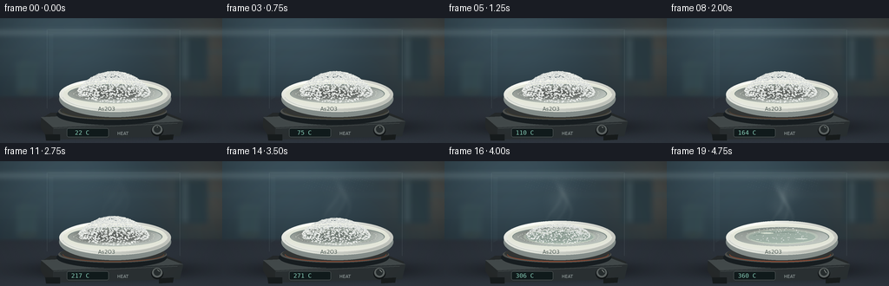
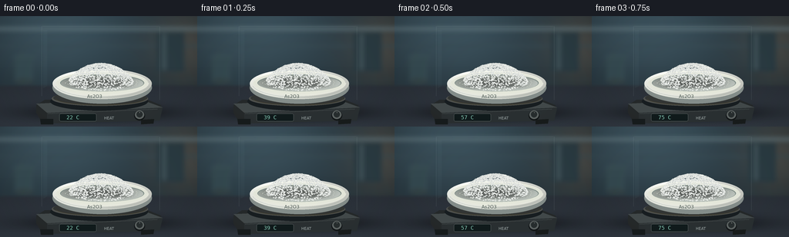

CODING AGENTS AS PIXEL WORLD MODELS
traex/GPT-6.1-Sol · phygen_120
点击播放 · 原生 RGB 像素
逐轮保存的候选
回放视频、检查图与代码变化。
每份候选均可单独播放。实际图片检查记录在下方工具轨迹中。
候选 01播放与检查图
点击播放 · 原生 RGB 像素


展开代码变化
--- 上一保存版本
+++ 本次保存版本
@@ -0,0 +1,219 @@
+"""Procedural macro laboratory timelapse: crystal softening, sublimation and melt."""
+from pathlib import Path
+import math
+import numpy as np
+from PIL import Image, ImageDraw, ImageFont, ImageFilter
+import artifact_io
+
+ROOT = Path(__file__).resolve().parent
+W,H,S=256,144,4
+WW,HH=W*S,H*S
+rng=np.random.default_rng(120)
+Y,X=np.mgrid[0:HH,0:WW].astype(float)
+x,y=X/S,Y/S
+
+def smooth(a,b,v):
+ q=np.clip((v-a)/(b-a),0,1)
+ return q*q*(3-2*q)
+
+def ellipse(draw,box,fill,outline=None,width=1):
+ draw.ellipse(tuple(int(v*S) for v in box),fill=fill,outline=outline,width=int(width*S))
+
+def line(draw,pts,fill,width=1):
+ draw.line([(int(a*S),int(b*S)) for a,b in pts],fill=fill,width=max(1,int(width*S)))
+
+def poly(draw,pts,fill):
+ draw.polygon([(int(a*S),int(b*S)) for a,b in pts],fill=fill)
+
+fontpath='/usr/share/fonts/truetype/dejavu/DejaVuSans.ttf'
+small=ImageFont.truetype(fontpath,5*S)
+mono=ImageFont.truetype('/usr/share/fonts/truetype/dejavu/DejaVuSansMono.ttf',7*S)
+label=ImageFont.truetype(fontpath,6*S)
+
+# A stable out-of-focus laboratory background with practical light sources.
+bg=np.zeros((HH,WW,3),float)
+bg[:]=[32,44,51]
+bg+=np.exp(-((x-75)**2/125**2+(y-12)**2/90**2))[...,None]*np.array([29,39,43])
+bg+=np.exp(-((x-245)**2/50**2+(y-38)**2/58**2))[...,None]*np.array([34,23,13])
+noise=rng.normal(0,.5,(HH,WW))
+bg+=noise[...,None]
+base=Image.fromarray(np.uint8(np.clip(bg,0,255)))
+bd=ImageDraw.Draw(base)
+# Defocused cabinetry, shelf, vessels and a cool light strip.
+bd.rectangle((0,15*S,WW,18*S),fill=(105,127,134))
+bd.rectangle((0,38*S,WW,40*S),fill=(56,75,83))
+bd.rectangle((203*S,21*S,239*S,72*S),fill=(43,60,67))
+bd.rectangle((211*S,23*S,215*S,70*S),fill=(73,91,97))
+ellipse(bd,(17,50,45,58),(59,81,87))
+bd.rectangle((19*S,54*S,43*S,85*S),fill=(54,75,82))
+ellipse(bd,(19,81,43,89),(53,68,71))
+line(bd,[(2,101),(256,82)],(54,71,76),1)
+base=base.filter(ImageFilter.GaussianBlur(3*S))
+# Brushed slate benchtop, large soft contact shadow.
+arr=np.array(base).astype(float)
+bench=smooth(87,94,y)
+benchshade=57+10*(y-90)/54
+bencharr=np.stack([benchshade*.75,benchshade*.86,benchshade],axis=-1)
+bencharr+=rng.normal(0,.8,(HH,WW))[...,None]
+arr=arr*(1-bench[...,None])+bencharr*bench[...,None]
+shadow=np.exp(-((x-130)/92)**2-((y-126)/10)**2)*.65
+arr*=1-shadow[...,None]
+base=Image.fromarray(np.uint8(np.clip(arr,0,255)))
+
+# Grain coordinates remain coherent throughout the time lapse.
+grains=[]
+for i in range(2350):
+ r=np.sqrt(rng.random()); ang=rng.random()*math.tau
+ u=r*math.cos(ang); v=r*math.sin(ang)
+ h=(max(0,1-r*r)**.85)*22
+ radius=rng.uniform(.30,1.35)*(1.6 if i%23==0 else 1)
+ grains.append((u,v,h,radius,rng.random(),rng.uniform(0,math.tau),rng.uniform(-9,10)))
+grains.sort(key=lambda g:g[1]*13-g[2])
+
+# Layer compositing helper.
+def rgba_layer():
+ im=Image.new('RGBA',(WW,HH)); return im,ImageDraw.Draw(im)
+def composite(im,layer):
+ return Image.alpha_composite(im.convert('RGBA'),layer).convert('RGB')
+
+
+def render(i):
+ t=i/19
+ temperature=22+338*t
+ melt=smooth(282,338,temperature)
+ sub=smooth(140,310,temperature)
+ im=base.copy(); d=ImageDraw.Draw(im)
+ # Instrument body in perspective, with machined edge and display.
+ poly(d,[(58,109),(182,105),(209,116),(207,136),(54,138),(47,126),(47,116)],(38,42,43))
+ poly(d,[(47,114),(181,108),(211,119),(61,126)],(68,75,76))
+ poly(d,[(61,126),(211,119),(207,136),(61,140)],(43,49,51))
+ line(d,[(62,127),(204,121)],(100,107,106),.55)
+ poly(d,[(52,134),(69,134),(69,141),(53,141)],(24,29,30))
+ poly(d,[(183,135),(200,134),(199,140),(183,141)],(25,29,29))
+ ellipse(d,(65,99,192,123),(24,30,33))
+ ellipse(d,(67,98,192,117),(80,82,79))
+ ellipse(d,(69,98,191,115),(51,54,53))
+ # Very subtle heating ring rather than a dramatic flame.
+ heat=smooth(80,340,temperature)
+ d.arc((72*S,99*S,189*S,116*S),0,180,fill=(int(63+85*heat),int(61+12*heat),48),width=S)
+ d.rounded_rectangle((77*S,127*S,125*S,137*S),radius=2*S,fill=(17,27,28),outline=(88,96,96),width=S//2)
+ d.text((82*S,128*S),f'{int(temperature):3d} C',font=mono,fill=(141,213,191))
+ ellipse(d,(174,123,188,136),(19,23,25))
+ ellipse(d,(175,123,187,134),(95,102,101))
+ ellipse(d,(177,124,185,132),(40,46,47))
+ line(d,[(181,125),(181+3*math.sin(t*2),128-2*math.cos(t*2))],(185,191,185),.65)
+ d.text((135*S,130*S),'HEAT',font=small,fill=(160,170,169))
+ # Bowl body, shaded porcelain, oval inner cavity.
+ ellipse(d,(68,72,197,114),(134,143,140))
+ ellipse(d,(69,70,196,108),(219,223,213))
+ # Analytic curved walls: broad bright rim and shadowed bowl.
+ ar=np.array(im).astype(float)
+ e=((x-132.5)/64.5)**2+((y-88)/19.4)**2
+ mask=(e<=1)
+ lit=182+43*np.exp(-((x-94)/45)**2)+13*(1-(y-88)/20)
+ color=np.stack([lit+5,lit+7,lit+0],axis=-1)
+ ar[mask]=np.clip(color[mask],0,255)
+ im=Image.fromarray(ar.astype(np.uint8)); d=ImageDraw.Draw(im)
+ ellipse(d,(73,72,192,102),(230,233,220))
+ ellipse(d,(78,76,187,98),(131,144,139))
+ ellipse(d,(79,77,186,98),(166,177,168))
+ # Smooth inside shading and a grain-contact shadow.
+ ar=np.array(im).astype(float)
+ e=((x-132.5)/53.3)**2+((y-87.3)/10.4)**2
+ inside=e<1
+ c=178+15*(x-132)/54+18*(y-87)/11-17*np.exp(-((y-79)/3)**2)
+ cols=np.stack([c-4,c+3,c-3],-1)
+ ar[inside]=np.clip(cols[inside],0,255)
+ sh=np.exp(-((x-130)/39)**4-((y-87)/6.8)**4)*(.38*(1-melt)+.08)
+ ar[inside]*=(1-sh[inside,None])
+ im=Image.fromarray(np.uint8(ar)); d=ImageDraw.Draw(im)
+ # Clear, slightly milky molten material appears beneath the shrinking grains.
+ liquid_alpha=smooth(230,320,temperature)
+ if liquid_alpha>0:
+ liquid,ld=rgba_layer()
+ ellipse(ld,(91,78,174,96),(195,209,193,int(130*liquid_alpha)))
+ ellipse(ld,(94,80,171,95),(156,180,167,int(160*liquid_alpha)))
+ ld.arc((94*S,80*S,172*S,95*S),12,157,fill=(227,238,218,int(225*liquid_alpha)),width=int(.65*S))
+ ld.arc((98*S,82*S,168*S,93*S),197,295,fill=(102,128,117,int(140*liquid_alpha)),width=int(.5*S))
+ ellipse(ld,(108,82.4,123,83.5),(241,248,230,int(200*liquid_alpha)))
+ ellipse(ld,(148,89,162,90),(242,251,240,int(175*liquid_alpha)))
+ im=composite(im,liquid); d=ImageDraw.Draw(im)
+ # Granular crystal mound: angular faces disappear individually, settling as heated.
+ radial=1-.07*sub-.12*melt
+ collapse=(1-.23*sub)*(1-.90*melt)
+ for u,v,h,r,threshold,ang,jitter in grains:
+ # Outer and smaller grains gradually sublime; high heat merges remaining ones.
+ loss=.12*sub+.84*melt
+ if threshold<loss: continue
+ xx=131+u*42*radial
+ yy=85.5+v*11.5*radial-h*collapse
+ rr=r*(1-.12*sub)*(1-.45*melt)
+ depth=v*.75-h/30
+ shade=231+jitter+depth*8
+ a=ang
+ points=[(xx+rr*math.cos(a+k*math.tau/5)*(1 if k%2 else .83),yy+rr*.72*math.sin(a+k*math.tau/5)) for k in range(5)]
+ poly(d,points,tuple(int(np.clip(shade+z,0,255)) for z in (0,3,0)))
+ poly(d,[points[0],points[1],(xx,yy),points[4]],tuple(int(np.clip(shade+z,0,255)) for z in (-24,-19,-20)))
+ poly(d,[points[1],points[2],(xx,yy)],tuple(int(np.clip(shade+z,0,255)) for z in (14,16,12)))
+ if rr>.85:
+ line(d,[points[2],points[3]],(249,251,239),.16)
+ # Fixed powder residue along the dry periphery.
+ for k in range(55):
+ a=k*2.399
+ xx=132+math.cos(a)*(45+(k%3)*1.2)
+ yy=87+math.sin(a)*8
+ if k%4==0 or melt<.8:
+ ellipse(d,(xx,yy,xx+.35+(k%4)*.12,yy+.45),(224,229,215))
+ # Front rim occludes contents, with fine real-world highlights.
+ d.arc((72*S,70*S,193*S,104*S),0,180,fill=(232,234,223),width=int(2.6*S))
+ d.arc((71*S,70*S,194*S,106*S),10,170,fill=(186,195,185),width=int(.6*S))
+ d.arc((74*S,72*S,191*S,101*S),190,340,fill=(252,252,238),width=int(.65*S))
+ d.text((113*S,101*S),'As2O3',font=label,fill=(80,93,87))
+ # Faint vapor plume: broad turbulent wisps evolving continuously, never dark smoke.
+ strength=smooth(155,310,temperature)*(.65+.35*melt)
+ if strength>0:
+ vap=np.zeros((HH,WW),float)
+ for k in range(11):
+ age=((t*1.8+k/11)%1)
+ cy=77-age*59
+ cx=130+math.sin(age*5+k*.82+t*3)*6+age*6
+ sx=5+age*12
+ sy=4+age*7
+ alpha=math.sin(age*math.pi)*(.034+.011*math.sin(k*1.4))
+ vap+=alpha*np.exp(-((x-cx)/sx)**2-((y-cy)/sy)**2)
+ # Narrow curving filaments give structure in the backlit white vapor.
+ for k in range(3):
+ age=np.clip((77-y)/61,0,1)
+ center=123+k*7+7*np.sin(age*6+t*5+k)+age*7
+ a=np.exp(-((x-center)/(1.6+age*3))**2)*np.sin(age*np.pi)*.055
+ a*=(y>17)&(y<77)
+ vap+=a
+ vap=np.clip(vap*strength,0,.30)
+ va=np.array(im).astype(float)
+ tint=np.array([215,230,228])
+ va=va*(1-vap[...,None])+tint*vap[...,None]
+ im=Image.fromarray(np.uint8(va))
+ # Quiet transparent fume enclosure, light catches only edges.
+ glass,gd=rgba_layer()
+ line(gd,[(54,13),(54,104)],(198,225,228,31),.65)
+ line(gd,[(207,13),(207,109)],(214,230,226,33),.65)
+ line(gd,[(55,13),(206,13)],(214,232,231,27),.65)
+ poly(gd,[(56,18),(61,18),(61,91),(56,94)],(183,217,223,7))
+ # Thin frost-like condensate at the cooler top appears as sample sublimes.
+ for k in range(120):
+ xx=93+(k*37%82)
+ yy=19+(k*13%16)
+ aa=int(30*sub*(.5+.5*math.sin(k*2)**2))
+ ellipse(gd,(xx,yy,xx+.25,yy+.3),(228,239,234,aa))
+ im=composite(im,glass)
+ # Lens vignetting and sensor texture: stable rather than flickering.
+ aa=np.array(im).astype(float)
+ vign=1-.13*((x-128)/170)**2-.08*((y-75)/100)**2
+ aa*=vign[...,None]
+ out=Image.fromarray(np.uint8(np.clip(aa,0,255))).resize((W,H),Image.Resampling.LANCZOS)
+ return np.asarray(out)
+
+if __name__=='__main__':
+ frames=np.stack([render(i) for i in range(20)])
+ artifact_io.save(frames,ROOT)
+ print('Saved',frames.shape,frames.dtype,'to',ROOT)
可观测工具轨迹
实际执行的命令与返回图片。
命令 1exit 0
/bin/bash -lc 'ls -la && cat prompt.txt && cat GENERATION_RULES.md && cat task_spec.json'
命令 2exit 0
/bin/bash -lc "cat artifact_io.py && python - <<'PY'
import PIL,numpy
print('PIL/numpy ready')
PY"命令 3exit 0
/bin/bash -lc 'fc-list | head -5'
命令 4exit 0
/bin/bash -lc "cat > generate.py <<'PY'
\"\"\"Procedural macro laboratory timelapse: crystal softening, sublimation and melt.\"\"\"
from pathlib import Path
import math
import numpy as np
from PIL import Image, ImageDraw, ImageFont, ImageFilter
import artifact_io
ROOT = Path(__file__).resolve().parent
W,H,S=256,144,4
WW,HH=W*S,H*S
rng=np.random.default_rng(120)
Y,X=np.mgrid[0:HH,0:WW].astype(float)
x,y=X/S,Y/S
def smooth(a,b,v):
q=np.clip((v-a)/(b-a),0,1)
return q*q*(3-2*q)
def ellipse(draw,box,fill,outline=None,width=1):
draw.ellipse(tuple(int(v*S) for v in box),fill=fill,outline=outline,width=int(width*S))
def line(draw,pts,fill,width=1):
draw.line([(int(a*S),int(b*S)) for a,b in pts],fill=fill,width=max(1,int(width*S)))
def poly(draw,pts,fill):
draw.polygon([(int(a*S),int(b*S)) for a,b in pts],fill=fill)
fontpath='/usr/share/fonts/truetype/dejavu/DejaVuSans.ttf'
small=ImageFont.truetype(fontpath,5*S)
mono=ImageFont.truetype('/usr/share/fonts/truetype/dejavu/DejaVuSansMono.ttf',7*S)
label=ImageFont.truetype(fontpath,6*S)
# A stable out-of-focus laboratory background with practical light sources.
bg=np.zeros((HH,WW,3),float)
bg[:]=[32,44,51]
bg+=np.exp(-((x-75)**2/125**2+(y-12)**2/90**2))[...,None]*np.array([29,39,43])
bg+=np.exp(-((x-245)**2/50**2+(y-38)**2/58**2))[...,None]*np.array([34,23,13])
noise=rng.normal(0,.5,(HH,WW))
bg+=noise[...,None]
base=Image.fromarray(np.uint8(np.clip(bg,0,255)))
bd=ImageDraw.Draw(base)
# Defocused cabinetry, shelf, vessels and a cool light strip.
bd.rectangle((0,15*S,WW,18*S),fill=(105,127,134))
bd.rectangle((0,38*S,WW,40*S),fill=(56,75,83))
bd.rectangle((203*S,21*S,239*S,72*S),fill=(43,60,67))
bd.rectangle((211*S,23*S,215*S,70*S),fill=(73,91,97))
ellipse(bd,(17,50,45,58),(59,81,87))
bd.rectangle((19*S,54*S,43*S,85*S),fill=(54,75,82))
ellipse(bd,(19,81,43,89),(53,68,71))
line(bd,[(2,101),(256,82)],(54,71,76),1)
base=base.filter(ImageFilter.GaussianBlur(3*S))
# Brushed slate benchtop, large soft contact shadow.
arr=np.array(base).astype(float)
bench=smooth(87,94,y)
benchshade=57+10*(y-90)/54
bencharr=np.stack([benchshade*.75,benchshade*.86,benchshade],axis=-1)
bencharr+=rng.normal(0,.8,(HH,WW))[...,None]
arr=arr*(1-bench[...,None])+bencharr*bench[...,None]
shadow=np.exp(-((x-130)/92)**2-((y-126)/10)**2)*.65
arr*=1-shadow[...,None]
base=Image.fromarray(np.uint8(np.clip(arr,0,255)))
# Grain coordinates remain coherent throughout the time lapse.
grains=[]
for i in range(2350):
r=np.sqrt(rng.random()); ang=rng.random()*math.tau
u=r*math.cos(ang); v=r*math.sin(ang)
h=(max(0,1-r*r)**.85)*22
radius=rng.uniform(.30,1.35)*(1.6 if i%23==0 else 1)
grains.append((u,v,h,radius,rng.random(),rng.uniform(0,math.tau),rng.uniform(-9,10)))
grains.sort(key=lambda g:g[1]*13-g[2])
# Layer compositing helper.
def rgba_layer():
im=Image.new('RGBA',(WW,HH)); return im,ImageDraw.Draw(im)
def composite(im,layer):
return Image.alpha_composite(im.convert('RGBA'),layer).convert('RGB')
def render(i):
t=i/19
temperature=22+338*t
melt=smooth(282,338,temperature)
sub=smooth(140,310,temperature)
im=base.copy(); d=ImageDraw.Draw(im)
# Instrument body in perspective, with machined edge and display.
poly(d,[(58,109),(182,105),(209,116),(207,136),(54,138),(47,126),(47,116)],(38,42,43))
poly(d,[(47,114),(181,108),(211,119),(61,126)],(68,75,76))
poly(d,[(61,126),(211,119),(207,136),(61,140)],(43,49,51))
line(d,[(62,127),(204,121)],(100,107,106),.55)
poly(d,[(52,134),(69,134),(69,141),(53,141)],(24,29,30))
poly(d,[(183,135),(200,134),(199,140),(183,141)],(25,29,29))
ellipse(d,(65,99,192,123),(24,30,33))
ellipse(d,(67,98,192,117),(80,82,79))
ellipse(d,(69,98,191,115),(51,54,53))
# Very subtle heating ring rather than a dramatic flame.
heat=smooth(80,340,temperature)
d.arc((72*S,99*S,189*S,116*S),0,180,fill=(int(63+85*heat),int(61+12*heat),48),width=S)
d.rounded_rectangle((77*S,127*S,125*S,137*S),radius=2*S,fill=(17,27,28),outline=(88,96,96),width=S//2)
d.text((82*S,128*S),f'{int(temperature):3d} C',font=mono,fill=(141,213,191))
ellipse(d,(174,123,188,136),(19,23,25))
ellipse(d,(175,123,187,134),(95,102,101))
ellipse(d,(177,124,185,132),(40,46,47))
line(d,[(181,125),(181+3*math.sin(t*2),128-2*math.cos(t*2))],(185,191,185),.65)
d.text((135*S,130*S),'HEAT',font=small,fill=(160,170,169))
# Bowl body, shaded porcelain, oval inner cavity.
ellipse(d,(68,72,197,114),(134,143,140))
ellipse(d,(69,70,196,108),(219,223,213))
# Analytic curved walls: broad bright rim and shadowed bowl.
ar=np.array(im).astype(float)
e=((x-132.5)/64.5)**2+((y-88)/19.4)**2
mask=(e<=1)
lit=182+43*np.exp(-((x-94)/45)**2)+13*(1-(y-88)/20)
color=np.stack([lit+5,lit+7,lit+0],axis=-1)
ar[mask]=np.clip(color[mask],0,255)
im=Image.fromarray(ar.astype(np.uint8)); d=ImageDraw.Draw(im)
ellipse(d,(73,72,192,102),(230,233,220))
ellipse(d,(78,76,187,98),(131,144,139))
ellipse(d,(79,77,186,98),(166,177,168))
# Smooth inside shading and a grain-contact shadow.
ar=np.array(im).astype(float)
e=((x-132.5)/53.3)**2+((y-87.3)/10.4)**2
inside=e<1
c=178+15*(x-132)/54+18*(y-87)/11-17*np.exp(-((y-79)/3)**2)
cols=np.stack([c-4,c+3,c-3],-1)
ar[inside]=np.clip(cols[inside],0,255)
sh=np.exp(-((x-130)/39)**4-((y-87)/6.8)**4)*(.38*(1-melt)+.08)
ar[inside]*=(1-sh[inside,None])
im=Image.fromarray(np.uint8(ar)); d=ImageDraw.Draw(im)
# Clear, slightly milky molten material appears beneath the shrinking grains.
liquid_alpha=smooth(230,320,temperature)
if liquid_alpha>0:
liquid,ld=rgba_layer()
ellipse(ld,(91,78,174,96),(195,209,193,int(130*liquid_alpha)))
ellipse(ld,(94,80,171,95),(156,180,167,int(160*liquid_alpha)))
ld.arc((94*S,80*S,172*S,95*S),12,157,fill=(227,238,218,int(225*liquid_alpha)),width=int(.65*S))
ld.arc((98*S,82*S,168*S,93*S),197,295,fill=(102,128,117,int(140*liquid_alpha)),width=int(.5*S))
ellipse(ld,(108,82.4,123,83.5),(241,248,230,int(200*liquid_alpha)))
ellipse(ld,(148,89,162,90),(242,251,240,int(175*liquid_alpha)))
im=composite(im,liquid); d=ImageDraw.Draw(im)
# Granular crystal mound: angular faces disappear individually, settling as heated.
radial=1-.07*sub-.12*melt
collapse=(1-.23*sub)*(1-.90*melt)
for u,v,h,r,threshold,ang,jitter in grains:
# Outer and smaller grains gradually sublime; high heat merges remaining ones.
loss=.12*sub+.84*melt
if threshold<loss: continue
xx=131+u*42*radial
yy=85.5+v*11.5*radial-h*collapse
rr=r*(1-.12*sub)*(1-.45*melt)
depth=v*.75-h/30
shade=231+jitter+depth*8
a=ang
points=[(xx+rr*math.cos(a+k*math.tau/5)*(1 if k%2 else .83),yy+rr*.72*math.sin(a+k*math.tau/5)) for k in range(5)]
poly(d,points,tuple(int(np.clip(shade+z,0,255)) for z in (0,3,0)))
poly(d,[points[0],points[1],(xx,yy),points[4]],tuple(int(np.clip(shade+z,0,255)) for z in (-24,-19,-20)))
poly(d,[points[1],points[2],(xx,yy)],tuple(int(np.clip(shade+z,0,255)) for z in (14,16,12)))
if rr>.85:
line(d,[points[2],points[3]],(249,251,239),.16)
# Fixed powder residue along the dry periphery.
for k in range(55):
a=k*2.399
xx=132+math.cos(a)*(45+(k%3)*1.2)
yy=87+math.sin(a)*8
if k%4==0 or melt<.8:
ellipse(d,(xx,yy,xx+.35+(k%4)*.12,yy+.45),(224,229,215))
# Front rim occludes contents, with fine real-world highlights.
d.arc((72*S,70*S,193*S,104*S),0,180,fill=(232,234,223),width=int(2.6*S))
d.arc((71*S,70*S,194*S,106*S),10,170,fill=(186,195,185),width=int(.6*S))
d.arc((74*S,72*S,191*S,101*S),190,340,fill=(252,252,238),width=int(.65*S))
d.text((113*S,101*S),'As2O3',font=label,fill=(80,93,87))
# Faint vapor plume: broad turbulent wisps evolving continuously, never dark smoke.
strength=smooth(155,310,temperature)*(.65+.35*melt)
if strength>0:
vap=np.zeros((HH,WW),float)
for k in range(11):
age=((t*1.8+k/11)%1)
cy=77-age*59
cx=130+math.sin(age*5+k*.82+t*3)*6+age*6
sx=5+age*12
sy=4+age*7
alpha=math.sin(age*math.pi)*(.034+.011*math.sin(k*1.4))
vap+=alpha*np.exp(-((x-cx)/sx)**2-((y-cy)/sy)**2)
# Narrow curving filaments give structure in the backlit white vapor.
for k in range(3):
age=np.clip((77-y)/61,0,1)
center=123+k*7+7*np.sin(age*6+t*5+k)+age*7
a=np.exp(-((x-center)/(1.6+age*3))**2)*np.sin(age*np.pi)*.055
a*=(y>17)&(y<77)
vap+=a
vap=np.clip(vap*strength,0,.30)
va=np.array(im).astype(float)
tint=np.array([215,230,228])
va=va*(1-vap[...,None])+tint*vap[...,None]
im=Image.fromarray(np.uint8(va))
# Quiet transparent fume enclosure, light catches only edges.
glass,gd=rgba_layer()
line(gd,[(54,13),(54,104)],(198,225,228,31),.65)
line(gd,[(207,13),(207,109)],(214,230,226,33),.65)
line(gd,[(55,13),(206,13)],(214,232,231,27),.65)
poly(gd,[(56,18),(61,18),(61,91),(56,94)],(183,217,223,7))
# Thin frost-like condensate at the cooler top appears as sample sublimes.
for k in range(120):
xx=93+(k*37%82)
yy=19+(k*13%16)
aa=int(30*sub*(.5+.5*math.sin(k*2)**2))
ellipse(gd,(xx,yy,xx+.25,yy+.3),(228,239,234,aa))
im=composite(im,glass)
# Lens vignetting and sensor texture: stable rather than flickering.
aa=np.array(im).astype(float)
vign=1-.13*((x-128)/170)**2-.08*((y-75)/100)**2
aa*=vign[...,None]
out=Image.fromarray(np.uint8(np.clip(aa,0,255))).resize((W,H),Image.Resampling.LANCZOS)
return np.asarray(out)
if __name__=='__main__':
frames=np.stack([render(i) for i in range(20)])
artifact_io.save(frames,ROOT)
print('Saved',frames.shape,frames.dtype,'to',ROOT)
PY
python generate.py"命令 5exit 0
/bin/bash -lc "python - <<'PY'
from pathlib import Path
import numpy as np
from PIL import Image
p=Path('.')
a=np.load('pixels.npz')['pixels']
assert a.shape==(144,256,20)
fs=sorted((p/'frames').glob('*.png'))
assert len(fs)==20
assert all(Image.open(f).mode=='RGB' and Image.open(f).size==(256,144) for f in fs)
for f in ['generate.py','pixels.npz','index.html','inspection.png','transition_check.png']:
print(f, (p/f).stat().st_size)
print('Output verified.')
PY
command -v ffmpeg || true"保存候选 1 份；完成命令 5 次；可验证图片返回 0 张。原始 API 响应与完整日志保留在本地。